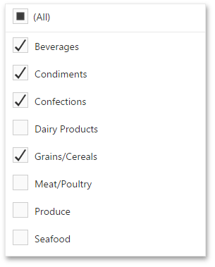
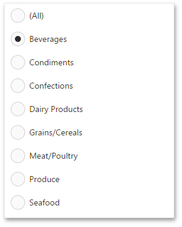
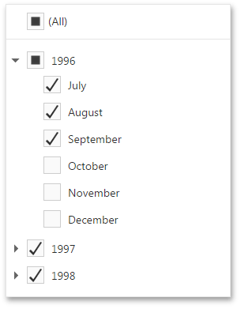

Filter Elements
Filter elements provide the capability to filter other dashboard items.
Combo Box
The Combo Box dashboard item allows you to select a value(s) from the drop-down list.
The Standard type allows you to select only a single value.

The Checked type allows you to select multiple values in the invoked drop-down list.

List Box
The List Box dashboard item allows you to select a value(s) from the list.
The Checked type allows you to select multiple values in the list box.

The Radio type allows you to select only a single value in the radio group.

Tree View
The Tree View dashboard item displays values in a hierarchical way and allows you to expand/collapse nodes.
